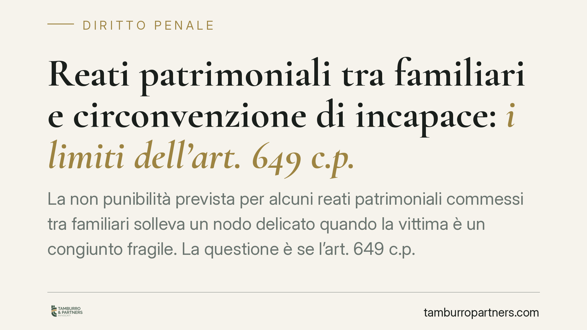

Reati patrimoniali tra familiari e circonvenzione di incapace: i limiti dell'art. 649 c.p.
La non punibilità prevista per alcuni reati patrimoniali commessi tra familiari solleva un nodo delicato quando la vittima è un congiunto fragile. La questione è se l'art. 649 c.p. possa valere anche per la circonvenzione di incapace. La giurisprudenza prevalente lo esclude, a tutela dell'autodeterminazione della persona vulnerabile. Vediamo perché e con quali conseguenze pratiche.

Il fatto e il tema
I rapporti patrimoniali all'interno della famiglia possono dare origine a condotte penalmente rilevanti: appropriazioni, truffe, sottrazioni di denaro o beni ai danni di un congiunto. Il problema diventa particolarmente serio quando la vittima è una persona anziana o in condizione di fragilità psichica, e chi la assiste approfitta di quello stato per orientarne le scelte economiche.
Il punto giuridico è se la speciale disciplina di favore prevista per i reati patrimoniali tra familiari — l'art. 649 c.p. — possa estendersi anche alla circonvenzione di incapace (art. 643 c.p.). È un tema interpretativo rilevante, perché incide direttamente sulla possibilità di punire chi abusa di un familiare non in grado di difendersi.
Inquadramento normativo
Occorre anzitutto leggere con precisione l'art. 649 c.p., che è spesso frainteso nella sua articolazione interna.
Il primo comma prevede la non punibilità per chi commette taluni reati contro il patrimonio in danno del coniuge non legalmente separato, della parte dell'unione civile, di un ascendente o discendente, di un affine in linea retta, dell'adottante o dell'adottato, o di un fratello o sorella conviventi.
Il secondo comma stabilisce invece la procedibilità a querela — e non la non punibilità — quando i medesimi reati sono commessi in danno di soggetti con un legame familiare meno stretto: tra gli altri, il coniuge legalmente separato, il fratello o la sorella non conviventi, lo zio o il nipote, l'affine in secondo grado convivente.
Il terzo comma contiene infine un'esclusione: le disposizioni precedenti non si applicano ai delitti di rapina, estorsione, sequestro di persona a scopo di estorsione e, in generale, a ogni altro delitto contro il patrimonio commesso con violenza alle persone.
È importante tenere distinti i tre piani: non punibilità (comma 1), querela (comma 2), esclusioni per i reati violenti (comma 3).
La circonvenzione di incapace resta fuori
L'art. 643 c.p. punisce chi, abusando dello stato di infermità o deficienza psichica di una persona, la induce a compiere un atto che produce effetti dannosi per sé o per altri. Non è un reato meramente patrimoniale: il bene giuridico protetto comprende anche la libertà di autodeterminazione del soggetto vulnerabile.
Proprio per questa ragione, l'orientamento prevalente della Corte di cassazione penale esclude che la causa di non punibilità dell'art. 649 c.p. possa estendersi alla circonvenzione di incapace. La tutela riconosciuta alla persona fragile non può essere neutralizzata dal legame familiare con l'autore della condotta.
Questa impostazione non è pacifica in dottrina e può formare oggetto di sollecitazioni interpretative. Ove venisse investita la Corte costituzionale, l'eventuale ordinanza di rimessione andrebbe verificata per numero di Registro e contenuto prima di qualunque commento di merito: su questo, al momento, invitiamo alla prudenza e a non dare per acquisiti esiti non confermati.
Implicazioni pratiche
Le conseguenze cambiano a seconda di chi si trova coinvolto.
La persona fragile e chi la assiste in buona fede. La cornice interpretativa prevalente offre una tutela più solida: il vincolo familiare non funziona come schermo quando la condotta integra circonvenzione di incapace.
Chi è indagato o imputato. Non può contare in automatico sulla non punibilità dell'art. 649 c.p.: la difesa va costruita sul merito della condotta, sull'effettiva incapacità della persona offesa e sul nesso tra abuso e atto compiuto.
I procedimenti pendenti. Finché non interviene una sentenza irrevocabile, un'eventuale evoluzione giurisprudenziale o costituzionale può incidere sull'esito. Chi ha posizioni aperte ha interesse a monitorare gli sviluppi.
Cosa fare in concreto
- Documentate lo stato di fragilità. Raccogliete certificazioni mediche e relazioni specialistiche che attestino l'infermità o la deficienza psichica al momento degli atti contestati.
- Valutate l'amministrazione di sostegno. È lo strumento civilistico per proteggere il patrimonio della persona vulnerabile e documentarne la condizione.
- Ricostruite i movimenti patrimoniali. Estratti conto, bonifici, donazioni e modifiche testamentarie vanno tracciati con date e importi: sono la prova decisiva.
- Non confidate in automatismi di non punibilità. Verificate con un legale se la condotta rientri nell'art. 643 c.p. o in altra fattispecie, perché la disciplina cambia radicalmente.
- Agite tempestivamente. Per i reati procedibili a querela i termini sono rigidi; per gli altri è comunque utile intervenire prima che le prove si disperdano.
---
Contributo informativo a cura di Tamburro & Partners - Avv. Giuseppe Tamburro. Non costituisce parere legale.
Ogni condominio ha una storia a sé.
Se gestisci un'amministrazione e vuoi un confronto su una specifica questione condominiale, scrivi allo studio. Ti rispondiamo entro un giorno lavorativo.